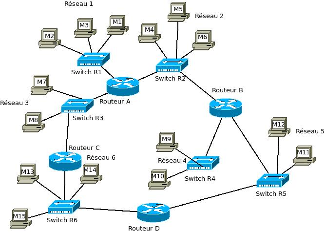

Dans l’activité précédente, nous avons vu qu’internet est un « réseau de réseau ». Nous allons ici un peu plus rentrer dans les détails.
Voici la représentation d’un « mini internet simplifié » :
Nous avons sur ce schéma les éléments suivants :
- 15 ordinateurs (clients ou serveurs) : M1 à M15
- 6 switchs : R1 à R6
- 4 routeurs : A, B, C et D
Un switch est une sorte de « multiprise intelligente » qui permet de relier entre eux tous les ordinateurs appartenant à un même réseau (nous verrons des exemples un peu plus bas). Pour ce faire, un switch est composé d’un nombre plus ou moins important de prises RJ45 femelles (un câble ethernet (souvent appelé « câble réseau ») possède 2 prises RJ45 mâles à ses 2 extrémités).

Un routeur permet de relier ensemble plusieurs réseaux, il est composé d’un nombre plus ou moins important d’interfaces réseau (cartes réseau). Les routeurs les plus simples que l’on puisse rencontrer permettent de relier ensemble deux réseaux (il possède alors 2 interfaces réseau), mais il existe des routeurs capables de relier ensemble une dizaine de réseaux.
Revenons maintenant à l’analyse de notre schéma :
Nous avons 5 réseaux, chaque réseau possède son propre switch (dans la réalité, un réseau est souvent composé de plusieurs switchs si le nombre d’ordinateurs appartenant à ce réseau devient important).
Les ordinateurs M1,M2 et M3 appartiennent au réseau 1. Les ordinateurs M4,M5 et M6 appartiennent au réseau 2. Nous pouvons synthétiser tout cela comme suit :
- réseau 1 : M1, M2 et M3
- réseau 2 : M4, M5 et M6
À faire vous-même 2.1
Complétez la liste ci-dessus avec les réseaux 3, 4 et 5
Le routeur A permet de relier les réseaux 1, 2 et 3 :
- routeur A : 1, 2 et 3
À faire vous-même 2.2
Complétez la liste ci-dessus avec les routeurs B, C et D
L’intérêt d’avoir des ordinateurs en réseau est de permettre à ces mêmes ordinateurs d’établir une communication entre eux (par exemple, pour effectuer une requête HTTP entre un client et un serveur). Les échanges entre 2 ordinateurs se font par l’intermédiaire de paquets de données. Dans la suite, j’utiliserai donc le terme de paquet pour évoquer l’échange de données entre 2 ordinateurs.
Voici quelques exemples de communications entre 2 ordinateurs :
cas n°1 : M1 veut communiquer avec M3
Le paquet est envoyé de M1 vers le switch R1, R1 « constate » que M3 se trouve bien dans le réseau 1, le paquet est donc envoyé vers M3. On peut résumé le trajet du paquet par :
M1→R1→M3
cas n°2 : M1 veut communiquer avec M7
Le paquet est envoyé de M1 vers le switch R1, R1 « constate » que M7 n’est pas sur le réseau 1, R1 envoie donc le paquet vers le routeur A. Le routeur A est directement relié au réseau 3, il envoie donc le paquet vers le switch R3. R3 n’a plus qu’à envoyer le paquet vers M7.
M1→R1→Routeur A→ R3 → M7
cas n°3 : M1 veut communiquer avec M9
Le paquet est envoyé de M1 vers le switch R1, R1 « constate » que M9 n’est pas sur le réseau 1, R1 envoie donc le paquet vers le routeur A. Le routeur A « constate » que la machine M9 n’appartient ni au réseau 3, ni au réseau 2, le problème se complique ! Le routeur A, comme tous les routeurs, possède une sorte d’annuaire appelé table de routage qui contient les chemins permettant d’atteindre une machine donnée. Le routeur A possède donc, dans sa table de routage, le chemin permettant d’atteindre M9 : Routeur A → R2 → routeur B → R4 → M9.
Le routeur A envoie donc le paquet vers le switch R2, qui renverra le paquet vers le routeur B...jusqu’à M9.
M1→R1→Routeur A→ R2 → Routeur B → R4 → M9
Restons sur ce cas n°3 : comme vous l’avez peut-être constaté, le chemin donné ci-dessus n’est pas l’unique possibilité, en effet on aurait pu aussi avoir :
M1→R1→Routeur A→ R3 → Routeur C → R6 → Routeur D → R5 → Routeur B → R4 → M9
Il est très important de bien comprendre qu’il existe toujours plusieurs chemins possibles pour relier 2 ordinateurs. On pourrait penser que le chemin «Routeur A → R2» est plus rapide et donc préférable au chemin «Routeur A → R3», cela est sans doute vrai, mais imaginer qu’il y ait un problème technique avec le switch R2 (trop de trafic ou carrément une panne), l’existence du chemin «Routeur A → R3» permettra tout de même d’établir une communication entre M1 et M9. Parfois, on entend certains politiques ou journalistes évoquer «la coupure d’internet », peut être comprendrez vous mieux maintenant que cela n’a aucun sens, car même si une autorité quelconque décidait de couper une partie des infrastructures, les paquets pourraient cheminer par un autre chemin.
À faire vous-même 2.3
Déterminer un chemin possible permettant d’établir une connexion entre la machine M4 et M14.
On peut se poser la question : comment les switchs ou les routeurs procèdent pour amener les paquets à bon port. Sans entrer dans les détails, car cela dépasse les objectifs de ces activités, vous devez tout de même savoir qu’ils utilisent les adresses IP des ordinateurs.
Nous avons vu qu’une adresse IP était de la forme a.b.c.d (exemple : 192.168.1.5). Une partie de l’adresse IP permet d’identifier le réseau auquel appartient la machine et l’autre partie de l’adresse IP permet d’identifier la machine sur le réseau.
Exemple : Soit un ordinateur M1 ayant pour adresse IP 132.16.28.34. Dans cette adresse IP « 132.16 » permet d’identifier le réseau (on dit que la machine M1 appartient au réseau ayant pour adresse 132.16.0.0) et « 28.34 » permet d’identifier la machine sur le réseau (plus précisément sur le réseau 132.16.0.0). M1 et M2 sont sur le même réseau, l’adresse IP de M2 devra donc commencer par «132.16» (adresse IP possible pour M2 : 132.16.29.38). En revanche M7 n’est pas sur le même réseau que M1 et M2, la partie réseau de son adresse IP ne pourra pas être «132.16» (IP possible pour M7 : 135.22.25.63).
En analysant la partie réseau des adresses IP des machines souhaitant rentrer en communication, les switchs et les routeurs sont capables d’aiguiller un paquet dans la bonne direction. Imaginons que le switch R1 reçoit un paquet qui est destiné à l’ordinateur M7 (adresse IP de M7 : 135.22.25.63). R1 «constate» que M7 n’est pas sur le même réseau que lui (R1 appartient au réseau d’adresse 132.16.0.0 alors que M7 appartient au réseau d’adresse 135.22.0.0), il envoie donc le paquet vers le routeur A...
À faire vous-même 2.4
En partant des exemples ci-dessus, donnez une adresse IP possible pour les ordinateurs suivants : M3, M8 et M6 .
Attention, les adresses IP (a.b.c.d) n’ont forcément pas les parties a et b consacrées à l’identification du réseau et les parties c et d consacrées à l’identification des machines sur le réseau :
- Certaines adresses ont les parties a, b et c consacrées à l’identification du réseau et la partie d consacrée à l’identification des machines sur le réseau (on parle d'adresse IP de classe C)
- Certaines adresses ont la partie a et b consacrées à l’identification du réseau et les parties c et d consacrées à l’identification des machines sur le réseau (on parle d'adresse IP de classe B)
- Certaines adresses ont la partie a consacrée à l’identification du réseau et les parties b, c et d consacrées à l’identification des machines sur le réseau (on parle d'adresse IP de classe A)
Tout cela dépend de ce que l’on appelle le «masque de sous-réseau », mais cette notion dépasse le cadre de ces activités.
Nous avons donc :
- Réseau de classe A : adresse réseau : a.0.0.0 (avec a qui doit être compris entre 1 et 126)
- Réseau de classe B : adresse réseau : a.b.0.0 (avec a qui doit être compris entre 128 et 191)
- Réseau de classe C : adresse réseau : a.b.c.0 (avec a qui doit être compris entre 192 et 223)
À faire vous-même 2.5
Un réseau de classe C peut contenir au maximum combien de machines ? et un réseau de classe B ? (rappel : b, c et d sont codés sur un octet).
Si vous désirez en apprendre (beaucoup) plus sur les réseaux, je vous recommande les vidéos proposées sur le site netprof : ici.